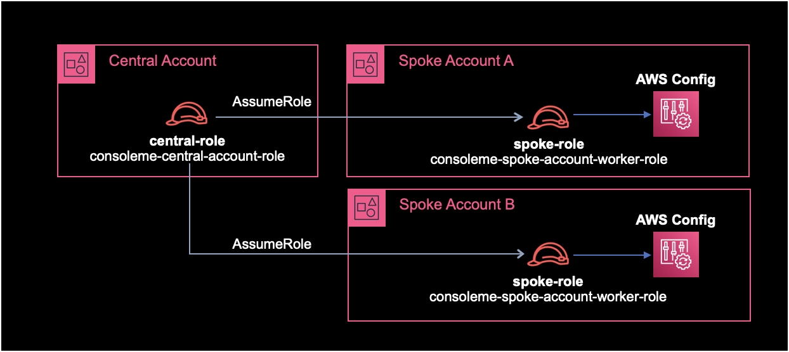
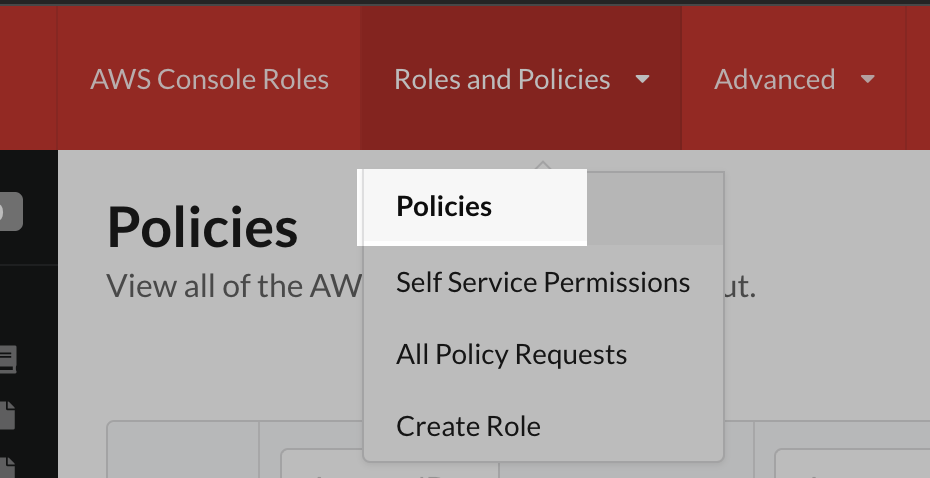

ConsoleMe 리소스 동기화
개요
ConsoleMe에서 Spoke Account에 있는 IAM 리소스들을 수집하도록 설정하는 방법을 소개한다.
설정방법
1. IAM 구성
ConsoleMe 아키텍쳐에서 Central Account와 Spoke Account를 이해하는게 중요하다.
- Central Account : ConsoleMe 인스턴스가 위치한 중앙 계정
- Spoke Accounts : ConsoleMe로 관리해야하는 AWS 계정들

위와 같이 IAM Role을 구성한다.
Central Account와 Spoke Accoun 양쪽에 IAM Role, Policy 설정이 필요하다.
Central Account와 Spoke Account에서 필요한 IAM 작업을 각각 나열하면 다음과 같다.
Central Account
- Central Role 생성
- Central Policy 생성
- 생성한 Central Policy를 Central Role에 부여Attach
Spoke Accounts
Spoke Account가 1개 이상일 경우, 각 AWS 계정마다 아래 IAM 작업 과정 전체를 반복한다.
- Spoke Worker Role 생성
- Spoke Policy 생성
- 생성한 Spoke Policy를 Spoke Worker Role에 부여Attach
- Spoke Worker Role에 신뢰관계 설정
Spoke Role의 Policy 설정
Spoke Role에서 사용할 Policy는 ConsoleMe 공식문서의 설정을 그대로 복사해서 생성했다.
{
"Statement": [
{
"Action": [
"autoscaling:Describe*",
"cloudwatch:Get*",
"cloudwatch:List*",
"config:BatchGet*",
"config:List*",
"config:Select*",
"ec2:describeregions",
"ec2:DescribeSubnets",
"ec2:describevpcendpoints",
"ec2:DescribeVpcs",
"iam:*",
"s3:GetBucketPolicy",
"s3:GetBucketTagging",
"s3:ListAllMyBuckets",
"s3:ListBucket",
"s3:PutBucketPolicy",
"s3:PutBucketTagging",
"sns:GetTopicAttributes",
"sns:ListTagsForResource",
"sns:ListTopics",
"sns:SetTopicAttributes",
"sns:TagResource",
"sns:UnTagResource",
"sqs:GetQueueAttributes",
"sqs:GetQueueUrl",
"sqs:ListQueues",
"sqs:ListQueueTags",
"sqs:SetQueueAttributes",
"sqs:TagQueue",
"sqs:UntagQueue"
],
"Effect": "Allow",
"Resource": ["*"],
"Sid": "iam"
}
],
"Version": "2012-10-17"
}
Spoke Role에 Policy를 생성해서 부여헀으면 다음은 Spoke Role에 신뢰관계를 아래와 같이 설정해준다.
Spoke Role의 신뢰관계 설정
Spoke Role에 신뢰관계Trust Relationship을 설정해준다.
Central Role이 Spoke Role을 AssumeRole 할 수 있도록 신뢰하게 만들어주는 작업이다.
{
"Statement": [
{
"Action": [
"sts:AssumeRole",
"sts:TagSession"
],
"Effect": "Allow",
"Principal": {
"AWS": "arn:aws:iam::1243456789012:role/YOUR_CONSOLEME_CENTRAL_ROLE_NAME_HERE"
}
}
],
"Version": "2012-10-17"
}
신뢰관계에서 123456789012는 본인의 Central Account ID로 변경하고 (Spoke Account의 ID가 아니라는 점을 명심하자), YOUR_CONSOLEME_CENTRAL_ROLE_NAME_HERE은 자신의 Central Role의 이름으로 알맞게 변경한다.
2. ConsoleMe 설정 변경
변경 전 설정파일
role_name 값의 의미: AWS Config 쿼리 또는 Spoke Account의 리소스에 대한 정책 업데이트와 같은 특정 작업을 수행하기 전에 각 Spoke Accoun에 있는 어떤 Role을 Assume Role 해야하는지 ConsoleMe에게 알려준다.
base.yaml 파일에는 기본적으로 policies 값이 주석처리되어 있다.
주석을 제거해서 Spoke Account의 Role을 AssumeRole 할 수 있게 활성화한다.
$ cat base.yaml
...
#policies:
# role_name: ConsoleMeRole
...
policies 값의 role_name은 이전 과정에서 구성한 AssumeRole할 Spoek Account의 Role 이름으로 변경해주면 된다.
변경 후 설정파일
$ cat base.yaml
...
policies:
role_name: consoleme-spoke-account-worker-role
...
설정 시 참고하기
role_name은 한 개만 설정 가능하다.
즉, 각각의 Spoke Account마다 있는 Worker Role 이름을 모두 똑같이 생성해줘야 한다.
Spoke Account의 Role 이름을 여러개 설정할 경우, ConsoleMe 서비스 시작 시 에러가 발생하지 않지만 마지막 라인의 Role 이름만 인식해서 IAM 리소스를 가져온다.
$ cat base.yaml
...
policies:
role_name: consoleme-spoke-account-worker-role-A
role_name: consoleme-spoke-account-worker-role-B
...
위 예제의 경우 마지막 라인인 consoleme-spoke-account-worker-role-B라는 이름의 IAM Role만 AssumeRole해서 리소스들을 가져온다.
3. ConsoleMe 재시작
변경된 설정을 적용하기 위해 ConsoleMe 서비스를 재시작한다.
4. IAM 수집결과 확인
ConsoleMe 서비스 재시작 후에는 ConsoleMe 컨테이너에 로그 모니터링을 걸어놓는다.
ConsoleMe 프로세스가 올라오면서 설정된 Spoke Role을 AssumeRole 해서 IAM 리소스들을 잘 가져오는지 모니터링하는 목적이다.
$ docker logs -f consoleme
ConsoleMe 웹페이지 → Policies 메뉴로 들어간다.

Policies 화면에서 Spoke Account에 있는 IAM Role, Policy가 잘 수집되었는지 확인한다.
작업 끝!
결론
Central Account와 Spoke Account의 이해와 AssumeRole이 정상 동작하도록 IAM Role, Policy 구성을 잘 체크하는게 핵심 포인트라고 생각된다.
ConsoleMe 자체가 AssumeRole에 Cross Account 환경까지 접목되어 있어서 AWS 초심자에게는 구성하는 과정이 헷갈리고 어려워보일 수도 있다.
하지만 겁먹지 말자. 겉으로 보기만 어렵지 생각보다 쉽게 구성할 수 있는 작업이다.
참고자료
아래 3개의 ConsoleMe 공식문서를 참고해서 구성했다.